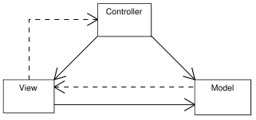

<table cellpadding="10" cellspacing="0" width="100%" border="0"><tr><td valign="top">
<div><a name=""></a><h1>Model-View-Controller</h1>
  <div class="ref-purpose">Applications well-structured</div>
 <div class="ref-synopsis"></div>
<h2>Table of Contents</h2>
<ul>

<a href="../Lion/tutorial_Lion.MVC.pkg.html#MVC_definition">The Model-View-Controller pattern</a><br />

<a href="../Lion/tutorial_Lion.MVC.pkg.html#mvcinlion">MVC in Lion</a><br />

&nbsp;&nbsp;&nbsp;<a href="../Lion/tutorial_Lion.MVC.pkg.html#mvcinlion.mvc-lifecycle">Basic life-cycle</a><br />

&nbsp;&nbsp;&nbsp;<a href="../Lion/tutorial_Lion.MVC.pkg.html#mvcinlion.controllers_and_actions">Controllers and Actions</a><br />

<a href="../Lion/tutorial_Lion.MVC.pkg.html#practical_tutorials">Practical tutorials regarding MVC</a><br />
</ul>

 <p></p>
 <span><a name="MVC_definition"></a><h2>The Model-View-Controller pattern</h2><p>Model-View-Controller (aka MVC) is a design pattern that enforces the separation between the input, processing, and output of an application. To this end, an application is divided into three core components: the model, the view, and the controller. Each of these components handles a discreet set of tasks.</p>
  <div class="messagebox floatnote metadata plainlinks"><div class="floatnoteicon"></div><br><p><strong>Other resources:</strong><br />
  - <a href="http://en.wikipedia.org/wiki/Model-view-controller">From Wikipedia</a><br />
  - <a href="http://java.sun.com/blueprints/patterns/MVC-detailed.html">From BluePrints J2EE patterns</a><br /></p>
  <p>Just google &quot;MVC pattern&quot; :)</p></div>
  <p><strong>Model:</strong><br />The model represents enterprise data and business rules: It manages the behavior and data of the application domain, responds to requests for information about its state (usually from the view), and responds to instructions to change state (usually from the controller).<br />
  The data returned by the model is display-neutral, meaning that the model applies no formatting. This way, a single model can provide data for any number of display interfaces. This reduces code duplication, because model code is only written once and is then reused by all of the views.<br />
  It has a purely functional interface, meaning that it has a set of public functions that can be used to achieve all of its functionality. Some of the functions are query methods that permit a &quot;user&quot; to get information about the current state of the model. Others are mutator methods that permit the state to be modified.</p>
  <p><strong>View:</strong><br />The view manages the display of information. The view is the interface the user sees and interacts with. For Web applications, this has historically been an HTML interface.<br />
  Handling all of these interfaces in your application is becoming increasingly challenging. A big advantage of MVC is that it handles the use of many different views for your application. There's no real processing happening in the view; it serves only as a way to output data and allow the user to act on that data, whether it is an online store or an employee list.</p>
  <p><strong>Controller:</strong><br />Processes and responds to events, typically user actions, and may invoke changes on the model.<br />
  It interprets requests from the user and calls portions of the model and view as necessary to fulfill the request. So when the user clicks a Web link or submits an HTML form, the controller itself doesn't output anything or perform any real processing. It takes the request and determines which model components to invoke and which formatting to apply to the resulting data</p>
  
  <p>So, to summarize, a user request is interpreted by the controller, which determines what portions of the model and view to call. The model handles interaction with data and applies business rules and then returns data. Finally, the appropriate view is determined and formatting is applied to the resulting data for presentation.</p></span>
 <span><a name="mvcinlion"></a><h2>MVC in Lion</h2><p>Lion has a MVC implementation ready to be used by just adding our <strong>Action Controllers</strong> and <strong>templates</strong>.</p>
  <p>Some of the most valuable features of Lion MVC are:
  <ol><li>MVC is Dual, as the integration of a MVC and a MVP pattern together.</li>
    <li>In that sense, the view layer is based on components: Components simplifies the development of rich user interfaces. Unlike other MVC frameworks, Lion uses a component-based View approach: Graphical components within the user interface correspond to instances in the server side. The state of UI components is synchronized between the client and the server. Out of the box, Lion uses Smarty for its display technology, but it can also accommodate to other display technologies.</li>
    <li>Reusable business layer: There are not contracts between the business layer and the rest of the system. To make it happens, the model is exposed by defining a set of services that acts as middleware, hidding the model classes to the rest of the application. This approach has a lot of advantages, i.e. the easy way to expose some of those services as webservices declarativelly.</li>
    <li>Clear separation between the model, the view and the controller.</li>
    <li>Authorization already integrated: We can protect and control the access to the model, the view and the controller declarativelly or programmatically. We can also perform some very low grain protections, i.e. restricting the viewable of some UI zones depending on user privileges.</li></ol></p>
 <a name="mvcinlion.mvc-lifecycle"></a><h3>Basic life-cycle</h3><p>The MVC life-cycle in Lion begins in an special class: The <strong>Action Dispatcher</strong>.<br />
  The Action Dispatcher is the class in which the <strong>Front Controller</strong> delegates to in order to execute the <strong>Action Controller</strong> associated to the incoming <strong>Request</strong>.</p>
  <p>Once the <a href="../ActionController/__ActionDispatcher.html">__ActionDispatcher</a> receives a Request (normally from the Front Controller, but not limited to) it performs the following tasks:
    <ol><li>It resolves and call to an Action Controller. The Action Controller returns a portion of the <strong>Model</strong> as well as some information regarding the <strong>View</strong> to be executed to.</li>
      <li>After that, it resolves the View and sends the Model information to it.</li>
      <li>Finally, it setups the <strong>Response</strong> with the information provided by the View. The Response is sent back to upper layers.</li></ol></p>
  
  <p>The <a href="../Model/__ModelAndView.html">__ModelAndView</a> represents a portion of the model retrieved by the Action Controller as well as information regarding the view to execute to.</p><br />
 <a name="mvcinlion.controllers_and_actions"></a><h3>Controllers and Actions</h3><p>There are 2 different concepts in Lion that we need to understand clearly: The Controller and the Action.</p>
  <p>A Controller is a class in charge of the execution of one or more actions, while an action is a the minimal execution unit, usually a Controller's method.</p><br /></span>
 <span><a name="practical_tutorials"></a><h2>Practical tutorials regarding MVC</h2><p>Take a look at the following tutorials regarding MVC:
  <ol><li><a href="../Lion/Tutorials/tutorial_Lion.tutorial1.pkg.html">The Hello World</a></li>
    <li><a href="../Lion/Tutorials/tutorial_Lion.tutorial2.pkg.html">The Advanced Hello World</a></li></ol></p></span></div>
      </td></tr></table>